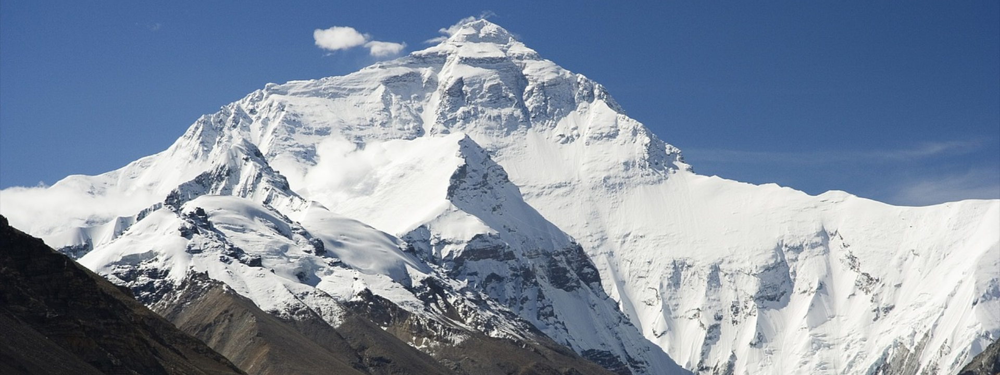
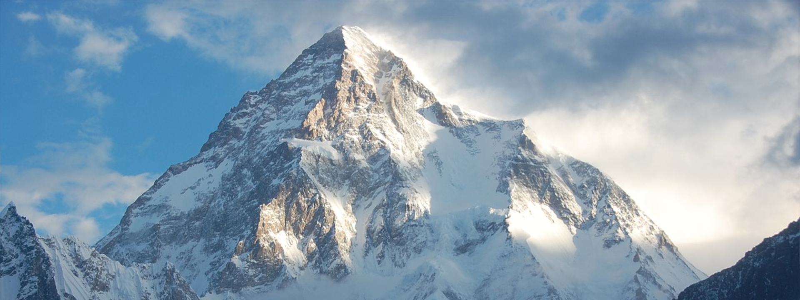
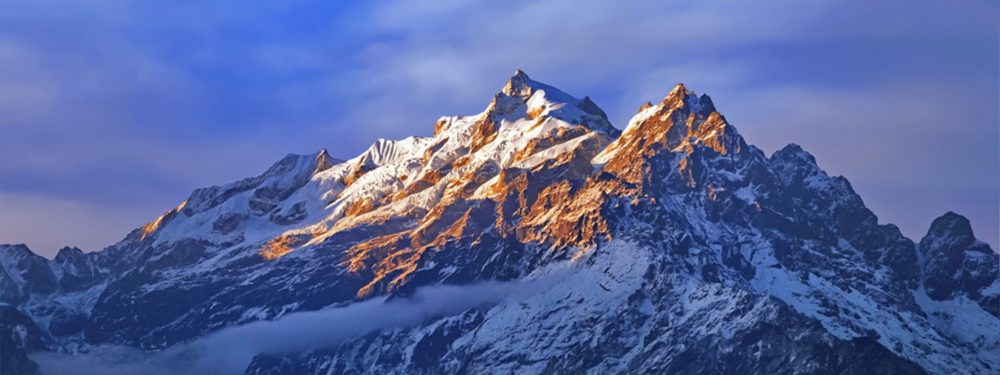
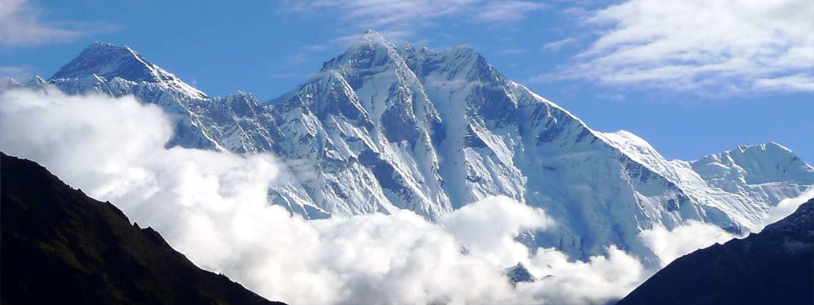
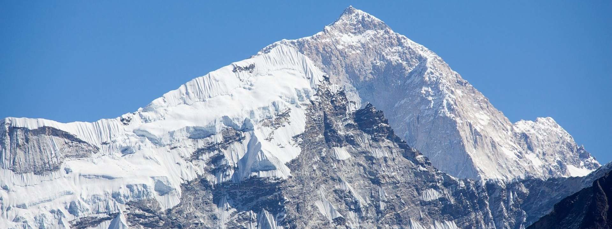

MOUNT EVEREST FUN FACTS!
Mount Everest rises 40 cm per century!
Mount Everest is about 60 million years old.
Mount Everest was first climbed in 1953.
Everest has been summited over 9,000 times.
About 300 People Have Died on Mount Everest.
Jumping spiders are the only animals permanently based on Mt. Everest
Sherpas are the only people who can climb Mt. Everest without oxygen

K2 FUN FACTS!
It’s the second-highest mountain peak in the world
It was called the highest mountain in the world in the 1980s
The first attempt to climb K2 happened in the year 1902
The first winter ascent happened in January 2021
K2 has the 2nd highest fatality rate with one death for every four successful ascents
The first woman to summit K2 was Polish climber Wanda Rutkiewicz.
The oldest person to ever summit K2 was Carlos Soria Fontán braved the mountain at 65.

K2 FUN FACTS!
It was once believed to be the highest mountain in the world
It features 14 protected areas that are home to several endangered animals
Kanchenjunga was designated as a world heritage site by UNESCO on July 17, 2016.
Four of the five peaks measures more than 8,000 meters.
The area around Kanchenjunga is said to be home to the ‘Kanchenjunga demon’.
There is tradition of stopping short of the summit as it is considered sacred by the people of Sikkim.
Since the 1990’s more than 20% of people died while climbing Kanchenjunga’s main peak.

LHOTSE FUN FACTS!
Lhotse is the fourth highest mountain in the world
The mountain was first climbed by Swiss climber Ernst Reiss and Austrian climber Fritz Luchsinger in 1956.
Lhotse has three peaks: Lhotse Main (the highest), Lhotse Middle, and Lhotse Shar.
The mountain is known for its steep and technical climbing routes, particularly on the south face.
In 2017, Swiss climber Ueli Steck set a new speed record for climbing the south face of Lhotse, completing the ascent in just 28 hours and 50 minutes.
Lhotse is part of the same mountain massif as Mount Everest, and the two peaks are connected by the South Col, a high mountain pass.
The name "Lhotse" means "South Peak" in Tibetan.

MAKALU FUN FACTS!
Makalu is the fifth highest mountain in the world
Mt. Makalu is considered as one of the most difficult eight-thousanders mountain to climb, some climbers considers its hardest mountain to climb.
It is located in the Himalayas on the border between Nepal and China.
The mountain was first climbed in 1955 by an American team led by Norman Dyhrenfurth.
The mountain is located in the Makalu-Barun National Park, which is home to a variety of plant and animal species, including the endangered red panda.
The name "Makalu" comes from the Sanskrit word "Maha Kala," which means "Great Black," referring to the mountain's dark appearance.
The mountain's summit features a unique "double peak," with the main summit being connected to a smaller peak called Kangchungtse.